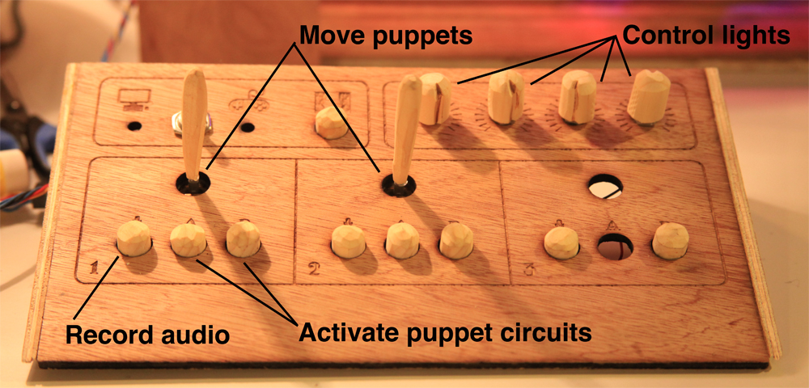

Make a Play
Make a Play is an electronic puppet theater. This educational toy is designed for children aged 6 and up, and is comprised of a wooden motorized puppet theater that is controlled by a physical controller. The physical controller allows controlling puppets movement, changing stage lighting, audio recording and activating puppets circuitry.
Make a Play was created to induce different creative skills, such as storytelling, imagination, logical thinking and hand crafts. Farther, it encourages the child to explore his everyday environment and make use of it.
The puppet theater is extremely modular and allows the child creating his own unique story. Puppets are placed on a motorized carts designed to carry a variety of puppets. The carts also contain a small bread-board that can provide electricity to the puppets. This special design enables the child to make his own puppet out of any material he chooses and add small electronics such as LEDs and solenoids. The child can also choose to put one of his ready-made dolls on the carts.
The theater is designed in a way that allows the child to create his own background and set. A background image can be easily placed on the theater interiors. The child can print or paint a background that fits his own story. Scenery objects can be easily placed between the background and the moving characters on a flat stage.
Make a Play Theater can be connected to a computer and special software allows the child recording the play as he plays it. Once pushing the record button, the software will record and save stage events taking place as well as the child's narration. This saved play can be played back later.
In the future the software will also enable editing an existing play, adding music, and adding sound-effect, by providing a child-friendly editing user interface.
The interface:
